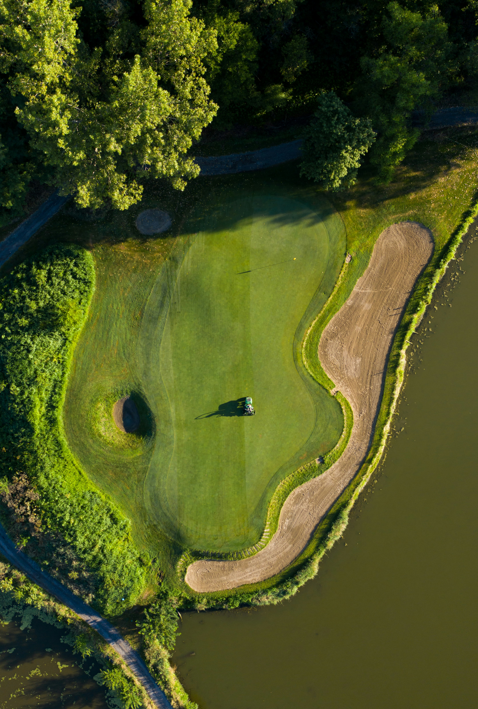

What is Golf?
Golf is a sport where players use clubs to hit a small ball into a series of holes on a course using as few strokes as possible.
It originated in Scotland in the 15th century and has grown into a global pastime enjoyed by millions.

Golf combines skill, strategy, and time outdoors on scenic courses.
Why Play Golf?
- Great exercise with walking
- Relaxing and social
- Playable at any age
- Improves focus and patience
Basic Rules Overview
- Play the ball as it lies
- Count every stroke (even misses)
- Keep pace of play (don't slow others)
- Repair divots and rake bunkers